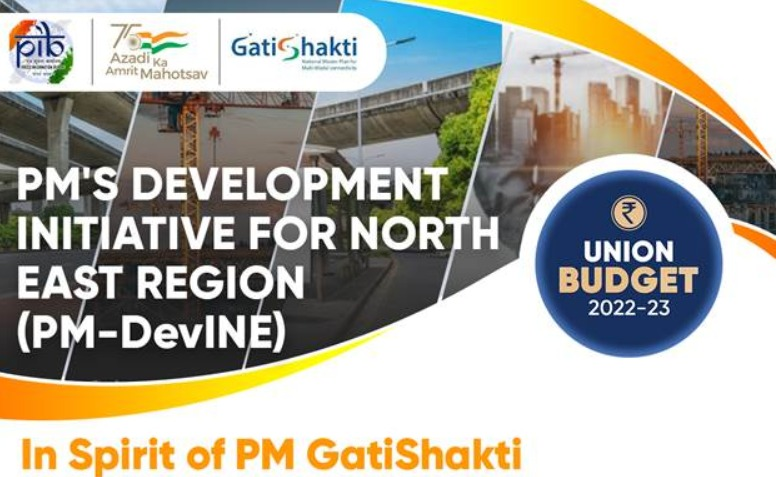
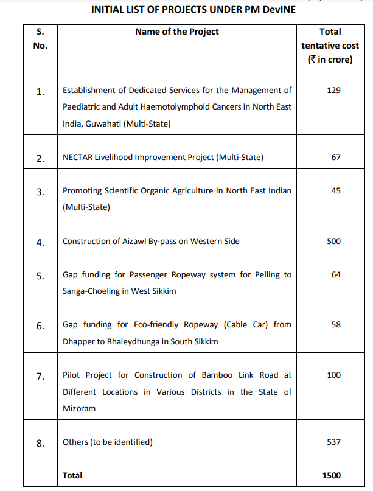
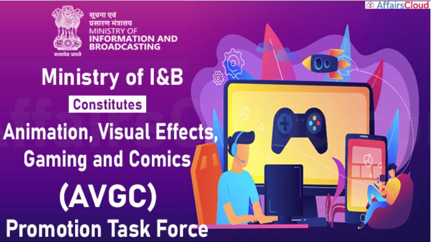

Youth
Prime Minister’s Development Initiative for North East Region (PMDevINE)
•A new scheme, Prime Minister’s Development Initiative for Northeast, PM-DevINE, will be implemented through the North-Eastern Council. It will fund infrastructure, in the spirit of PM GatiShakti, and social development projects based on felt needs of the North-East. This will enable livelihood activities for youth and women, filling the gaps in various sectors. It will not be a substitute for existing central or state schemes. While the central ministries may also pose their candidate projects, priority will be given to those posed by the states. An initial allocation of ` 1,500 crore will be made. PM GatiShakti
> • PM GatiShakti is a transformative approach for economic growth and sustainable development. The approach is driven by seven engines, namely, Roads, Railways, Airports, Ports, Mass Transport, Waterways, and Logistics Infrastructure. All seven engines will pull forward the economy in unison. These engines are supported by the complementary roles of Energy Transmission, IT Communication, Bulk Water & Sewerage, and Social Infrastructure. Finally, the approach is powered by Clean Energy and Sabka Prayas – the efforts of the Central Government, the state governments, and the private sector together – leading to huge job and entrepreneurial opportunities for all, especially the youth.

AVGC Promotion Task Force
•The animation, visual effects, gaming, and comic (AVGC) sector offers immense potential to employ youth. An AVGC promotion task force with all stakeholders will be set-up to recommend ways to realize this and build domestic capacity for serving our markets and the global demand.Sunrise Opportunities
• Artificial Intelligence, Geospatial Systems and Drones, Semiconductor and its eco-system, Space Economy, Genomics and Pharmaceuticals, Green Energy, and Clean Mobility Systems have immense potential to assist sustainable development at scale and modernize the country. They provide employment opportunities for youth, and make Indian industry more efficient and competitive.
